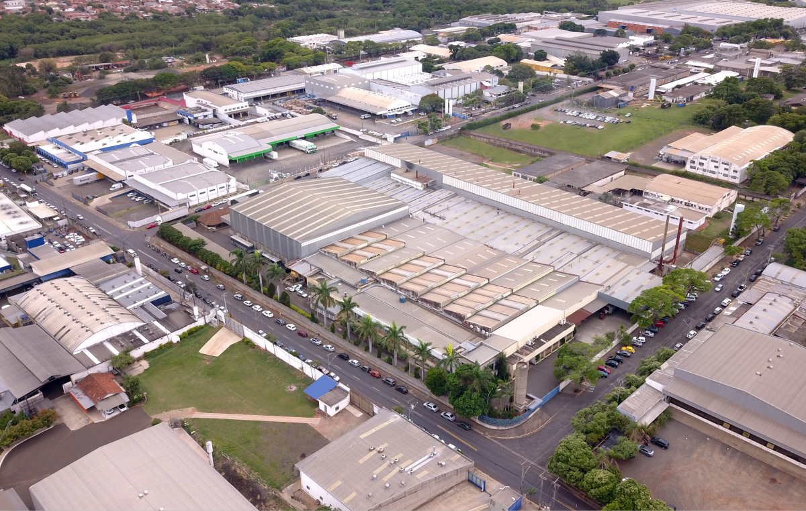
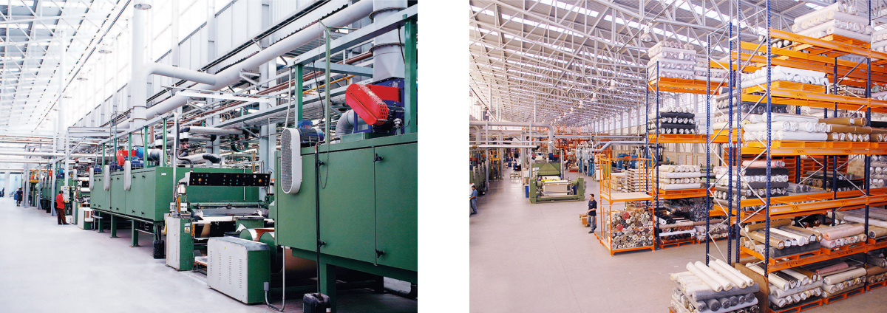

Fundada em 1954 como Jeryes Shayeb & Filhos Ltda, nossa história começou na produção de cintos nos fundos da casa de uma família impulsionada pela necessidade de superar os desafios da vida. Ao longo dos anos, a empresa cresceu significativamente, diversificando as linhas de produção para incluir malas, bolsas de viagem (sob a marca América), meias sociais e esportivas (marcas Terra Branca e Jotesse), além de participar das linhas de bolsas femininas e escolares.
Com um novo modelo de negócios e consolidação no mercado de acessórios, a empresa passou por uma transição e tornou-se a J. Shayeb & Cia Ltda. Na década de 90, iniciou a produção de laminados sintéticos de PVC para fabricar sua própria matéria- prima de cintos. Com o know-how adquirido, expandiu o fornecimento desses laminados ao mercado externo, atendendo setores: moveleiro, automotivo e moda, incluindo calçados, bolsas e acessórios, tornando-se um dos principais players do mercado em pouco mais de uma década.
Sempre empregando alta qualidade e tecnologia avançada na composição de materiais, a J. Shayeb caminha alinhada com a ética, o desenvolvimento social e a sustentabilidade em toda a cadeia de fornecimento.
Estamos presentes no dia-a-dia do brasileiro marcando o complemento de moda em todo o Brasil.

